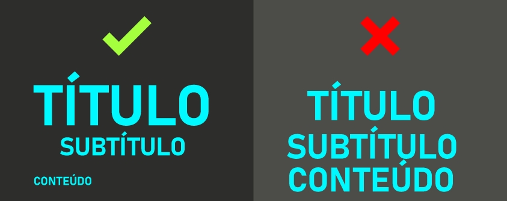

A Hierarquia segue o mesmo princípio que a Proporção só que em vários níveis, ou seja, definimos o elemento mais importante como o maior de todos e assim criamos elementos cada vez menores de acordo com a importância que desempenham dentro do conjunto total. É um conceito aplicado principalmente a hierarquia de textos.
